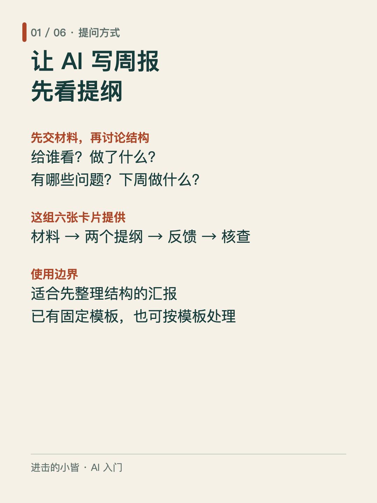
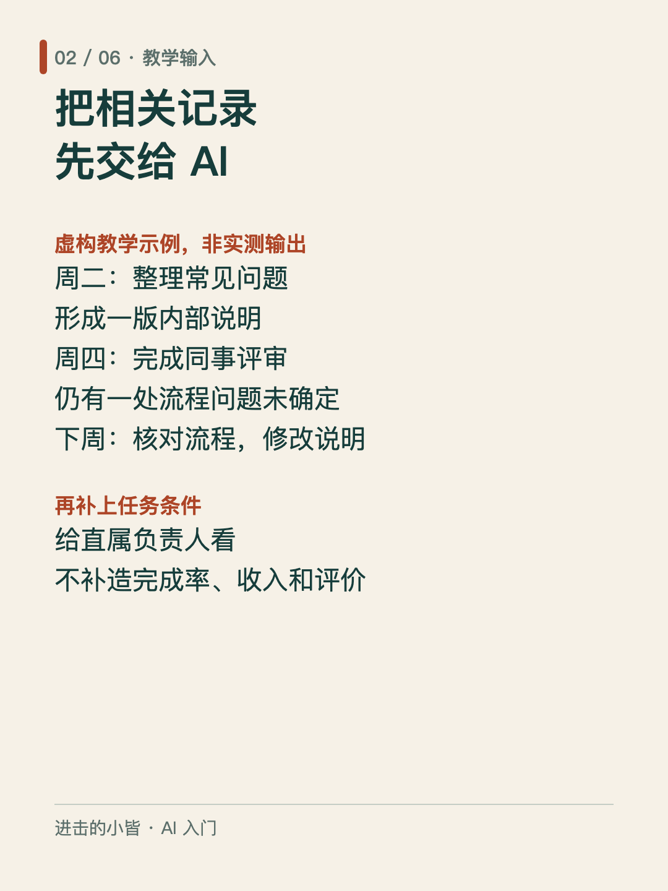
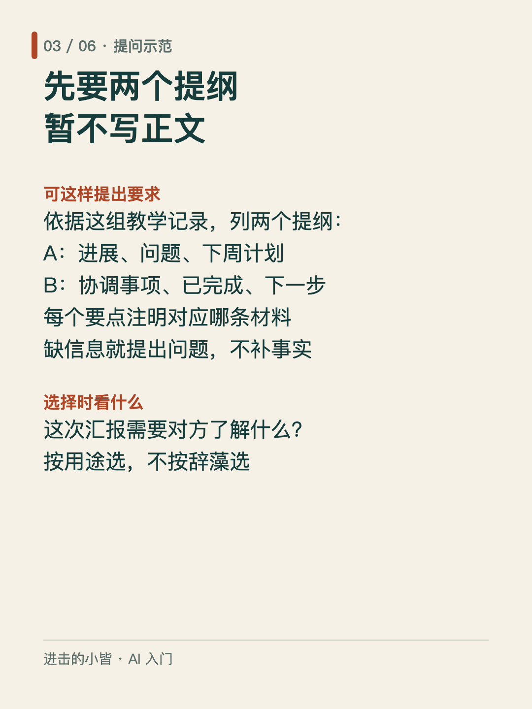
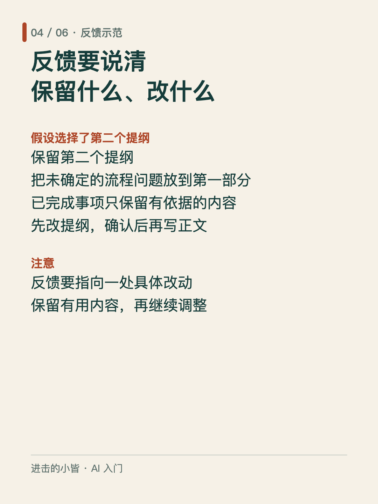
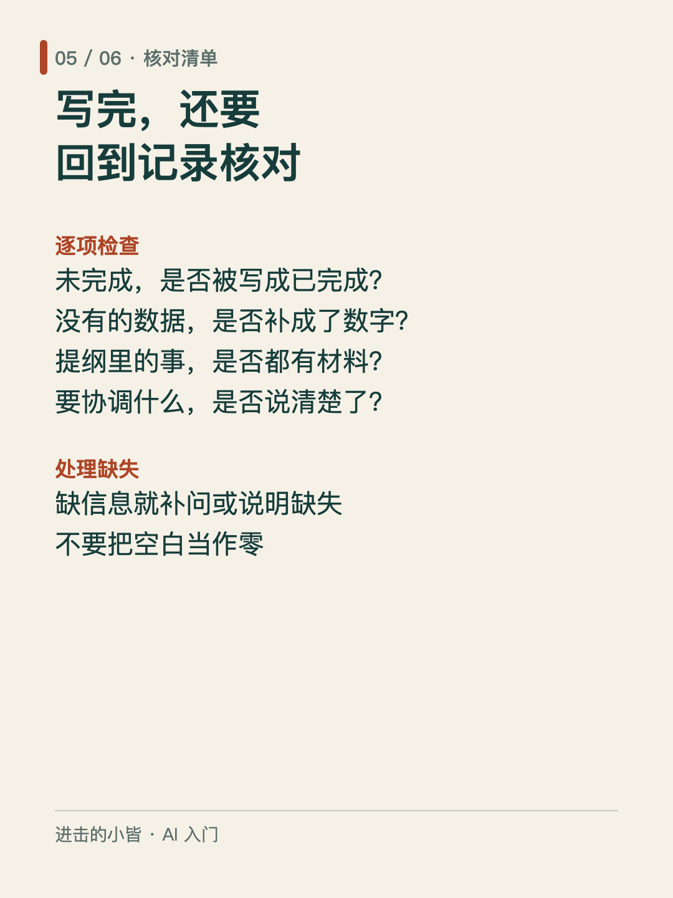
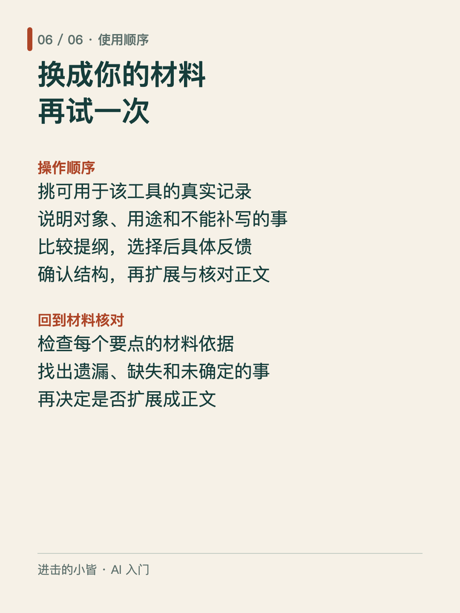

让 AI 写周报，先看提纲
「帮我写一份周报」只说了任务，没有交代本周做了什么、给谁看，以及什么不能编造。
这组六张卡片展示一种提问方式：提供材料 → 比较两个提纲 → 选择并反馈 → 核对正文。适合需要先整理汇报结构的场景；已有固定模板时，也可以直接按模板处理。
卡片首次给出的工作记录为虚构教学示例，非实测输出。使用时，请换成可用于该工具的真实记录。
先检查提纲里每一项有没有依据，再决定是否扩展成正文。尤其留意：没完成的事是否被写成已完成，缺失的数据是否被补成一个数字。
方法参考：《AI Prompting for Everyone》课件，署名 Andrew Ng。
#AI入门 #周报 #提问方法





